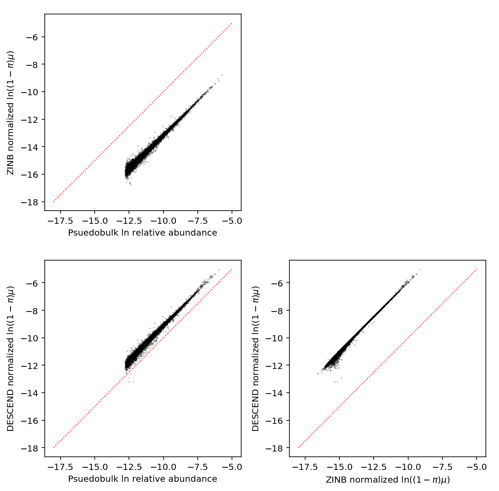
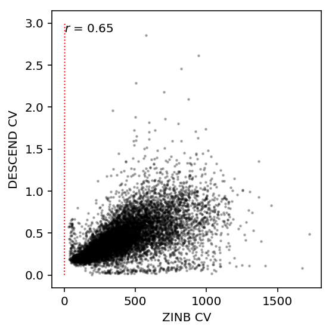

DESCEND analysis
Introduction
Wang et al 2017 introduce DESCEND, a non-parametric method to estimate the latent distribution of gene expression in scRNA-Seq data.
Compare their estimated distributions to our ZINB-estimated distributions.
Run DESCEND
Write a wrapper around the DESCEND object type. Refer to
https://rpy2.readthedocs.io/en/version_2.7.x/_static/notebooks/s4class.html
for useful information.
class DESCEND(rpy2.robjects.methods.RS4): def __init__(self, descend_obj): self.descend_obj = descend_obj @property def estimates(self): if tuple(self.descend_obj.rclass) != ('DESCEND',): return pd.Series( [np.nan for _ in range(5)], index=['Nonzero Fraction', 'Nonzero Intensity', 'Mean', 'CV', 'Gini']) else: est = self.descend_obj.slots['estimates'] names = list(list(x) for x in est.names) return pd.Series(np.array(est)[:,0], index=names[0])
For simplicity, just fit DESCEND on cells from one individual.
keep_ind = annotation['chip_id'] == 'NA18507' umi = pd.concat( [(chunk .loc[:,keep_samples.values.ravel()] .loc[:,keep_ind.values.ravel()]) for chunk in pd.read_table('/project2/mstephens/aksarkar/projects/singlecell-qtl/data/scqtl-counts.txt.gz', index_col=0, chunksize=100)]) umi = umi.loc[keep_genes.values.ravel()]
<<zinb-imports>> <<descend-imports>> <<parse-descend>> <<recode-impl>> <<qc-filters>> design = recode(annotation[keep_ind], 'experiment') design -= design.mean(axis=0) design /= design.std(axis=0) <<read-na18507>> result = descend.runDescend( count_matrix=umi, scaling_consts=annotation[annotation['chip_id'] == 'NA18507']['mol_hs'], Z=design, n_cores=28) descend_result = pd.DataFrame([DESCEND(x).estimates for x in result], index=umi.index) descend_result.to_csv('descend-result.txt.gz', sep='\t', compression='gzip')
sbatch --partition=broadwl -n1 -c28 --exclusive --mem=16G --job-name descend --out descend.out #!/bin/bash source activate scqtl python /project2/mstephens/aksarkar/projects/singlecell-qtl/code/descend.py
Submitted batch job 45838251
Mean estimation
Estimate the Poisson MLE for pseudobulk data.
log_rho = dict() log_rho['pseudobulk'] = np.log(umi.agg(np.sum, axis=1)) - np.log(annotation[keep_ind]['mol_hs'].sum())
Read ZINB estimates.
zinb_log_mu = pd.read_table('/project2/mstephens/aksarkar/projects/singlecell-qtl/data/density-estimation/with-cell-cycle-genes/zi2-log-mu.txt.gz', sep=' ', index_col=0)['NA18507'] zinb_logodds = pd.read_table('/project2/mstephens/aksarkar/projects/singlecell-qtl/data/density-estimation/with-cell-cycle-genes/zi2-logodds.txt.gz', sep=' ', index_col=0)['NA18507'] # Important: log(sigmoid(x)) = -softplus(-x) log_rho['zinb_nonzero'] = zinb_log_mu - np.log1p(np.exp(zinb_logodds)) log_rho['zinb_nonzero'] -= sp.logsumexp(log_rho['zinb_nonzero']) log_rho['zinb'] = zinb_log_mu - sp.logsumexp(zinb_log_mu)
Read the DESCEND estimates.
descend_result = pd.read_table('/scratch/midway2/aksarkar/singlecell/descend/descend-result.txt.gz', index_col=0) descend_result = descend_result.mask(~np.isfinite(descend_result)) log_rho['descend_nonzero'] = np.log(descend_result['Nonzero Intensity']) - np.log(descend_result['Nonzero Intensity'].sum()) log_rho['descend'] = np.log(descend_result['Mean']) - np.log(descend_result['Mean'].sum())
Construct a DataFrame for convenience.
log_rho = pd.DataFrame(log_rho) log_rho.columns = ['DESCEND', 'DESCEND nonzero', 'Pseudobulk', 'ZINB', 'ZINB nonzero'] log_rho = log_rho[['DESCEND', 'ZINB', 'DESCEND nonzero', 'ZINB nonzero', 'Pseudobulk']]
Plot the estimates against each other.
plt.clf() P = log_rho.shape[1] fig, ax = plt.subplots(P, P) fig.set_size_inches(12, 12) for y in range(P): ax[y, 0].set_ylabel(log_rho.columns[y]) for x in range(P): if y > x: ax[y, x].scatter(log_rho.iloc[:,x], log_rho.iloc[:,y], c='k', s=2, alpha=0.25) ax[y, x].text(-15, -5, '$r$ = {:.2g}'.format(st.mstats.spearmanr(log_rho.iloc[:,x], log_rho.iloc[:,y]).correlation), verticalalignment='top') ax[y, x].plot([-16, -5], [-16, -5], ls=':', lw=1, c='r') ax[y, x].set_aspect('equal') else: ax[y, x].set_axis_off() for x in range(P): ax[-1, x].set_xlabel(log_rho.columns[x]) fig.tight_layout()

CV estimation
Initialize the data structure.
cv = {}
Read ZINB estimates.
zinb_log_mu = pd.read_table('/project2/mstephens/aksarkar/projects/singlecell-qtl/data/density-estimation/with-cell-cycle-genes/zi2-log-mu.txt.gz', sep=' ', index_col=0)['NA18507'] zinb_log_phi = pd.read_table('/project2/mstephens/aksarkar/projects/singlecell-qtl/data/density-estimation/with-cell-cycle-genes/zi2-log-phi.txt.gz', sep=' ', index_col=0)['NA18507'] zinb_logodds = pd.read_table('/project2/mstephens/aksarkar/projects/singlecell-qtl/data/density-estimation/with-cell-cycle-genes/zi2-logodds.txt.gz', sep=' ', index_col=0)['NA18507'] mean = sp.expit(-zinb_logodds) * np.exp(zinb_log_mu) var = sp.expit(-zinb_logodds) * (2 * np.exp(zinb_log_mu) + np.exp(2 * zinb_log_mu + zinb_log_phi)) cv['zinb'] = (np.sqrt(var) / mean).ravel()
Read the DESCEND estimates.
descend_result = pd.read_table('/scratch/midway2/aksarkar/singlecell/descend/descend-result.txt.gz', index_col=0) cv['descend'] = descend_result.mask(~np.isfinite(descend_result))['CV']
Construct a DataFrame for convenience.
cv = pd.DataFrame(cv)
Plot the estimates against each other.
plt.clf() plt.gcf().set_size_inches(4, 4) plt.scatter(cv['zinb'], cv['descend'], c='k', s=2, alpha=0.25) plt.text(0, 3, '$r$ = {:.2g}'.format(st.mstats.spearmanr(cv['zinb'], cv['descend']).correlation), verticalalignment='top') plt.plot([0, 3], [0, 3], ls=':', lw=1, c='r') plt.xlabel('ZINB CV') plt.ylabel('DESCEND CV') # plt.gca().set_aspect('equal', adjustable='datalim', anchor='SW') plt.gcf().tight_layout()
